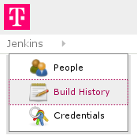

Jenkins comes with a nice theming plugin. To use it you need to set up a stylesheet that is accessible to everyone who uses jenkins.
The plugin will only insert
<link rel="stylesheet" type="text/css" href="..." />into the page the client receives.
Like many others I decided to use github to serve a CSS file. Unfortunately you can't just use gists or raw blobs to serve your css, since the mime-time will be text/plain instead of text/css. Your browser will ignore it. The solution is to set up a github page to serve your css.
I have create a theme for my company's Jenkins:
